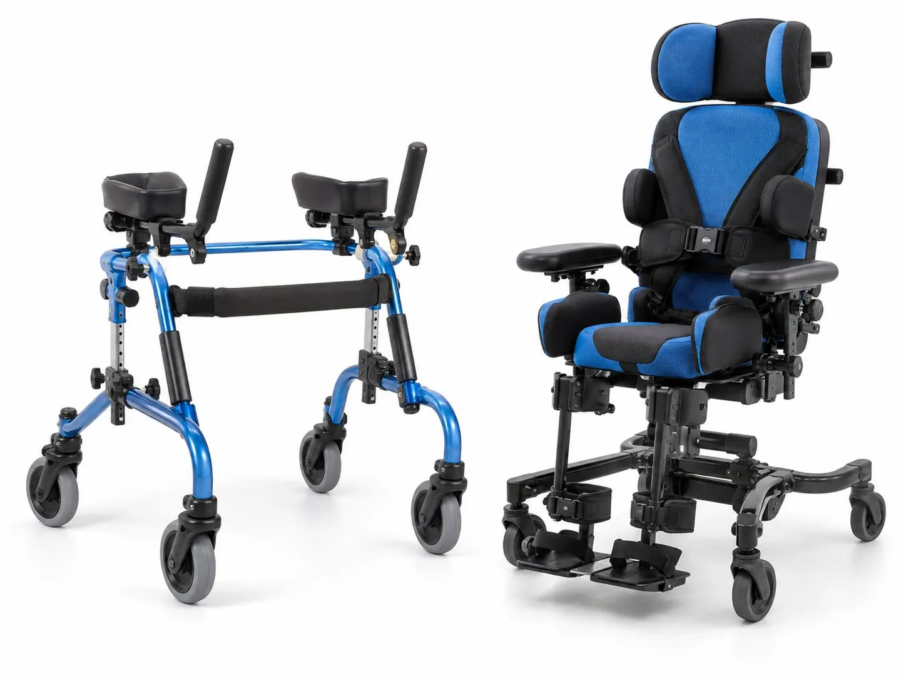

AFO vs KAFO vs HKAFO: Which Leg Brace Do You Need?
The letters look confusing, but they just tell you which joints the brace covers. Here's how the three main leg braces compare.
Braces, AFOs and mobility support for children. We fit with patience, explain things to parents in plain words and check often as your child grows.
Children aren’t small adults. Their bones are still growing, their muscles are changing and they’re learning new skills all the time. A brace that fits perfectly today may be too small in a few months.
So we plan ahead. We check your child’s braces often, and we watch how they move as they grow. We also take time to explain things to you as a parent, because you’re the one helping with the brace every day.
We work with children who have:
If you’re worried about how your child walks or stands, we’re happy to take a look and explain what we see.
An AFO (ankle foot orthosis) supports the foot and ankle and goes up the back of the calf. An SMO (supramalleolar orthosis) is a smaller brace that sits just above the ankle bones. Both help keep the foot in a better position for standing and walking. Read our parent guide on leg braces for children to learn more.
Some children need support at the knee too, which is where a KAFO helps. Others wear a splint at night to gently stretch tight muscles while they sleep.
For children with painful flat feet or other foot problems, custom insoles can make standing and walking more comfortable. See our page on custom foot orthotics.
Some children need extra help to stand or move around. We can give advice on walkers, standing support and seating, and how braces work together with them.
Our team includes certified prosthetists and orthotists. Meet them on our team page.

Children grow fast, so most need a new brace about once a year. Some need one sooner during a growth spurt. We'll check the fit every few months and tell you when it's time.
Yes, most children wear their braces at school. We'll explain the wearing plan to you, and you can share it with your child's teacher. Tell us if anything gets in the way of play or sport.
Look for shoes that open wide, with laces or straps and a removable insole. Many children need a size or a width bigger than usual. Bring a pair to your appointment and we'll check them together.
No. Many young children walk on their toes for a while and grow out of it. If it carries on, or your child has tight calf muscles, a doctor or physiotherapist should check them first. A brace may then be part of the plan.
A brace supports the joints, but your child still uses their muscles. Many children also do stretches or physiotherapy alongside their brace. We work with your child's therapist where we can.
This page gives general information only. It isn't medical advice. Please talk to your doctor or our team about your own needs.

The letters look confusing, but they just tell you which joints the brace covers. Here's how the three main leg braces compare.

Why children wear braces, what the fitting is like and practical tips to help your child get used to their new AFO.